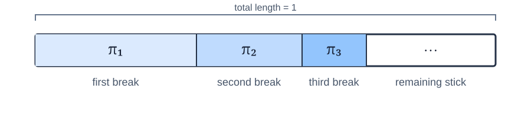

The Dirichlet Process, Explained by an Amateur
The problem with picking a distribution
Imagine trying to model a dataset without knowing what its underlying probability distribution looks like. Rather than choosing a specific distribution beforehand, we could place a probability distribution over possible distributions. This allows us to express uncertainty not just about the data, but also about the distribution that generates it.
The Dirichlet process (DP) provides exactly this framework. It is a stochastic process whose realizations are themselves probability distributions. Instead of assuming a fixed number of possible outcomes or clusters, it allows the model to accommodate an unbounded number of them.
That is the basic appeal of the DP for clustering: the number of clusters is not fixed in advance. But there is a catch worth keeping in mind from the beginning. The DP does not magically discover the one objectively correct number of clusters. It gives us a probability model in which the number of occupied clusters is uncertain and can adapt to the data. The distinction matters, and we will come back to it.
Formally, a Dirichlet process is a probability distribution over probability distributions. A prior is a distribution expressing our uncertainty before observing data; a posterior is the updated distribution after observing data. A draw from a DP is therefore not one number or one vector of parameters. It is an entire probability distribution. Almost surely (meaning with probability one), that draw is discrete: it places all its probability mass on a countable collection of points, often called atoms. If two latent draws select the same atom, they share a cluster label.
A Distribution of Distributions
Why would we want a prior over an entire probability distribution in the first place?
In an ordinary parametric Bayesian model, the number of parameters is fixed in advance. For example, a Gaussian model might have a mean and a variance (or a mean vector and covariance matrix). We put a prior on those parameters and update it as observations arrive. Collecting ten million observations does not suddenly give the model more parameters.
Bayesian nonparametrics takes a step back. The unknown object is itself a probability measure on a space \(\Theta\). Instead of only asking, “What is the mean?” or “What is the covariance?”, we ask, “What distribution could plausibly have generated these observations?” The word nonparametric does not mean that there are no parameters at all. The DP still has ingredients such as a base measure and a concentration parameter. It means that the model does not impose a fixed finite-dimensional form on the unknown distribution.
The name comes from the ordinary Dirichlet distribution. A Dirichlet distribution describes random probability vectors: nonnegative numbers that add up to one. For three categories, those vectors live on a triangle; for two, they live on a line segment. The Dirichlet process extends this idea to probability measures. Its defining property is that, no matter how we divide the space into a finite collection of measurable pieces, the probabilities assigned to those pieces follow a Dirichlet distribution.
Ferguson’s Definition: The Formal Bit
Let \((\Theta,\mathcal{B})\) be a measurable space, where \(\Theta\) is the set of possible values and \(\mathcal{B}\) specifies the subsets to which we can assign probabilities. Let \(H\) be a probability measure on \(\Theta\), and let \(\alpha>0\) be a concentration parameter.
A random probability measure \(G\) follows a Dirichlet process with base measure \(H\) and concentration parameter \(\alpha\), written \[G\sim\operatorname{DP}(\alpha,H),\] if, for every finite measurable partition \((A_1,\ldots,A_K)\) of \(\Theta\), \[\bigl(G(A_1),\ldots,G(A_K)\bigr) \sim \operatorname{Dirichlet}\bigl( \alpha H(A_1),\ldots,\alpha H(A_K) \bigr).\] If \(H(A_k)=0\), then \(G(A_k)=0\) almost surely.
That definition looks intimidating, but the two ingredients have fairly intuitive jobs. The base measure \(H\) tells the process where probability mass is expected to go. In fact, \[\mathbb{E}[G(A)]=H(A)\] for every measurable set \(A\). The concentration parameter \(\alpha\) controls how tightly a draw \(G\) tends to stay around \(H\). More precisely, \[\operatorname{Var}(G(A)) = \frac{H(A)(1-H(A))}{\alpha+1}.\] A large \(\alpha\) gives lower variance, so the random measure tends to look more like \(H\). A small \(\alpha\) allows more variation. To build an intuitive definition: Think of \(H\) as the suggested menu and \(\alpha\) as how strongly the restaurant sticks to it.
Conjugacy: Rapid update
One especially convenient property of the DP is conjugacy. In Bayesian language, this means that after observing data, the posterior belongs to the same family as the prior. The update is unusually neat.
Suppose that, conditional on \(G\), we observe independent draws \(\theta_1,\ldots,\theta_n\) from \(G\). Then \[G\mid\theta_1,\ldots,\theta_n \sim \operatorname{DP}\!\left( \alpha+n,\, \frac{\alpha H+\sum_{i=1}^{n}\delta_{\theta_i}}{\alpha+n} \right),\] where \(\delta_{\theta_i}\) is a point mass at \(\theta_i\): it assigns probability one to that particular value.
There are two updates happening here. First, the concentration parameter increases from \(\alpha\) to \(\alpha+n\), as if we have added \(n\) observations’ worth of information. Second, the new base measure is a weighted blend of the original \(H\) and the empirical distribution of the observations. The empirical distribution assigns equal probability mass to each observed value. So, as we collect more observations, we update our estimate of the underlying probability distribution using the data we have seen.
A small warning: this conjugacy statement is for observations drawn directly from \(G\). In a mixture model, we usually observe data \(x_i\) generated through another distribution conditional on a latent parameter \(\theta_i\). That extra layer changes the inference problem. We will need a different tool for that part.
Breaking a Stick over and over again
Ferguson’s definition tells us what probabilities look like on every finite partition, but it does not give us a particularly visual picture of a draw from \(G\). Stick-breaking does:
Imagine a stick of total length one. Draw \(\beta_1\sim\operatorname{Beta}(1,\alpha)\), break off that fraction of the stick, and call the piece \(\pi_1\). From what remains, break off a fraction \(\beta_2\), calling that piece \(\pi_2\). Keep going. Formally, take independent variables \[\beta_k\sim\operatorname{Beta}(1,\alpha), \qquad \theta_k^*\sim H,\] and define \[\pi_k = \beta_k\prod_{j=1}^{k-1}(1-\beta_j), \qquad G=\sum_{k=1}^{\infty}\pi_k\delta_{\theta_k^*}.\] The \(\theta_k^*\) are the atoms, and the \(\pi_k\) are the probability weights assigned to them. The result is a discrete random probability distribution.
This is a like planning a procrastinator’s weekend. You have 48 hours. You promise to spend 30% of your time on homework. Then you look at the remaining 70% and promise to spend 25% of that on chores. Then you look at what is left and allocate 40% of it to Netflix. Each decision takes a fraction of what remains, not a fraction of the original 48 hours. Eventually, you have a long tail of increasingly small pieces. The stick-breaking construction works the same way, except the pieces are probability weights rather than tasks on your todo list.

The construction really does use up the whole stick. Since \[\mathbb{E}[\ln(1-\beta_j)]=-\frac{1}{\alpha}<0,\] the remaining fraction \[\prod_{j=1}^{k}(1-\beta_j)\] converges to zero almost surely. Consequently, the weights add up to one almost surely. Their expectations are \[\mathbb{E}[\pi_k] = \frac{1}{1+\alpha} \left(\frac{\alpha}{1+\alpha}\right)^{k-1}.\] So the expected weights decrease geometrically. A smaller \(\alpha\) tends to put more weight on the first few atoms; a larger \(\alpha\) spreads the expected weight across more of them. In practice, we often truncate the infinite sum at a sufficiently large \(K\) for computation. That gives a finite approximation, not a claim that the original process has only \(K\) atoms.
The Chinese Restaurant: Clusters Without a Seating Chart
Now suppose we integrate \(G\) out and focus on the cluster assignments of observations. This gives the Chinese Restaurant Process (CRP), one of the most memorable ways to understand the DP.
Picture a restaurant with infinitely many possible tables. The first customer sits at the first table. Each later customer chooses between joining an occupied table and starting a new one. If table \(k\) currently has \(n_k\) customers, then customer \(n\) joins it with probability \[P(\text{table }k) = \frac{n_k}{n-1+\alpha},\] or starts a new table with probability \[P(\text{new table}) = \frac{\alpha}{n-1+\alpha}.\] The probabilities add up to one because the occupied table counts sum to \(n-1\).
The restaurant has a simple rule: popular tables attract more customers, but opening a new table is always possible. The parameter \(\alpha\) controls how appealing that new-table option is. A larger \(\alpha\) makes new tables more likely; a smaller one encourages customers to join existing groups.
After \(n\) customers, let \(K_n\) be the number of occupied tables. Its expected value is \[\mathbb{E}[K_n] = \sum_{i=1}^{n}\frac{\alpha}{\alpha+i-1} = \alpha\bigl(\psi(\alpha+n)-\psi(\alpha)\bigr),\] where \(\psi\) is the digamma function. For large \(n\), this grows approximately like \[\mathbb{E}[K_n]\approx \alpha\ln\left(1+\frac{n}{\alpha}\right).\] For example, when \(\alpha=1\) and \(n=100\), the exact expectation is the 100th harmonic number, approximately \(5.19\) occupied tables. When \(\alpha=10\), it is approximately \(24.44\). These are expectations, not guaranteed table counts: an actual seating arrangement can have more or fewer tables.
The Polya Urn
The Blackwell-MacQueen Polya urn gives another view of the same process. Instead of customers and tables, imagine drawing values from an urn. The predictive distribution for the next draw is \[\theta_n\mid\theta_1,\ldots,\theta_{n-1} \sim \frac{\alpha H+\sum_{i=1}^{n-1}\delta_{\theta_i}} {\alpha+n-1}.\] This expression has two ways to produce the next value. With weight proportional to \(\alpha\), we draw a fresh value from \(H\). Otherwise, we repeat one of the values already observed, with values that have appeared more often being more likely to appear again.
That is the same reinforcement idea as the restaurant: existing values become easier to repeat, but a new value can still appear. The sequence is infinitely exchangeable, which means that the joint distribution of any finite collection of draws does not depend on their order. By de Finetti’s theorem, such a sequence can be represented as conditionally independent draws from a random probability measure. In this case, that random measure has the DP distribution \(\operatorname{DP}(\alpha,H)\).
The restaurant and the urn are not two unrelated tricks. They are two ways of describing the predictive behaviour associated with the same underlying random measure.
How do we model continuous data?
There is an apparent problem: A draw \(G\) from a DP is almost surely discrete. If we draw observations directly from \(G\), repeated values are possible. That is useful for clustering, but it is not a realistic model for measurements such as height, temperature, or voltage, which are usually treated as continuous.
The solution is to put a sampling distribution around each atom. This gives a Dirichlet process mixture model (DPMM): \[G\sim\operatorname{DP}(\alpha,H),\qquad \theta_i\mid G\sim G,\qquad x_i\mid\theta_i\sim p(x\mid\theta_i).\] Here, \(\theta_i\) is a latent parameter selected from the discrete measure \(G\), and \(x_i\) is the actual observation generated using a kernel distribution \(p(x\mid\theta_i)\). For example, \(\theta_i\) might contain the mean and variance of a Gaussian distribution.
Because \(G\) is discrete, different observations can select the same \(\theta_i\), which puts them in the same cluster. But their observed values \(x_i\) need not be identical: they are generated from a continuous distribution centred or shaped by that shared parameter. The DP supplies the clustering structure; the kernel supplies the continuous variation within each cluster.
Assigning the clusters
For a conjugate DPMM, we can integrate \(G\) out and use a Markov chain Monte Carlo (MCMC) method to sample cluster assignments. One common approach is a collapsed Gibbs sampler. The idea is to temporarily remove observation \(i\) from its cluster, then calculate how plausible each possible reassignment would be.
For an existing cluster \(k\), the unnormalised assignment probability is \[n_{k,-i}\, p(x_i\mid x_{-i,z_{-i}=k}),\] where \(n_{k,-i}\) is the number of other observations currently assigned to cluster \(k\), and the predictive density measures how well observation \(x_i\) fits that cluster. For a new cluster, the corresponding weight is \[\alpha\int p(x_i\mid\theta)\,H(d\theta).\] These are weights proportional to the probabilities; to obtain actual probabilities, we normalize them so that all possible assignments sum to one.
Translating to English, the sampler asks two questions: how many observations are already in this group, and how well does this observation fit? A large cluster gets an advantage from its size, but a small or new cluster can still win if the observation fits it much better. When the prior \(H\) is conjugate to the sampling model, the predictive distributions and the integral for a new cluster can often be calculated in closed form.
This is not a magic clustering machine. MCMC produces samples from a posterior distribution, and its reliability depends on the model and the sampler mixing well. It is useful because it lets us represent uncertainty over cluster assignments rather than pretending that one clustering is unquestionably correct.
Four Pieces of the Same Pizza?
We have now seen the Dirichlet process from four angles. Ferguson’s definition tells us what probability assignments look like on finite partitions. Stick-breaking shows how a discrete random distribution can be built from an infinite sequence of weights. The Chinese Restaurant Process describes how clusters form as observations arrive. And the Polya urn gives the same predictive story in terms of repeated draws.
The practical attraction is that we do not have to specify a finite number of mixture components before fitting the model. The number of occupied clusters is allowed to vary with the data. But there is an important drawback: a DP mixture’s posterior number of clusters does not necessarily converge to the true number of components in the distribution that generated the data. The model is flexible, but flexibility is not the same thing as an automatic guarantee of recovering the "correct" clustering.
Once this distinction is clear, related models become easier to understand. For example, hierarchical Dirichlet processes extend the idea to grouped data, allowing different groups to share mixture components while retaining their own specific structure.
The Dirichlet process is not a magic spell, and it does not make choosing a model unnecessary. What it gives us is a coherent way to express uncertainty over distributions and let the number of occupied clusters grow as observations arrive.
References
Antoniak, C. E. (1974). Mixtures of Dirichlet Processes with Applications to Bayesian Nonparametric Problems. Annals of Statistics, 2(6), 1152–1174.
Brown University CSCI 2950-P (2011). Applied Bayesian Nonparametrics, Lecture Notes. https://cs.brown.edu/courses/csci2950-p/fall2011/lectures/2011-09-22_dirichletProcesses.pdf
Escobar, M. D., and West, M. (1995). Bayesian Density Estimation and Inference Using Mixtures. Journal of the American Statistical Association, 90(430), 577–588.
Ferguson, T. S. (1973). A Bayesian Analysis of Some Nonparametric Problems. Annals of Statistics, 1(2), 209–230.
Ghosal, S., and van der Vaart, A. (2017). Fundamentals of Nonparametric Bayesian Inference. Cambridge University Press.
Neal, R. M. (2000). Markov Chain Sampling Methods for Dirichlet Process Mixture Models. Journal of Computational and Graphical Statistics, 9(2), 249–265.
Rochebrune, J., and Julyan, A. (2018). P vs NP: Dirichlet Processes. HAL preprint hal-01950668. https://hal.science/hal-01950668v1/file/Rochebrune_julyan_HAL.pdf
Sethuraman, J. (1994). A Constructive Definition of Dirichlet Priors. Statistica Sinica, 4(2), 639–650.
Teh, Y. W., Jordan, M. I., Beal, M. J., and Blei, D. M. (2006). Hierarchical Dirichlet Processes. Journal of the American Statistical Association, 101(476), 1566–1581.